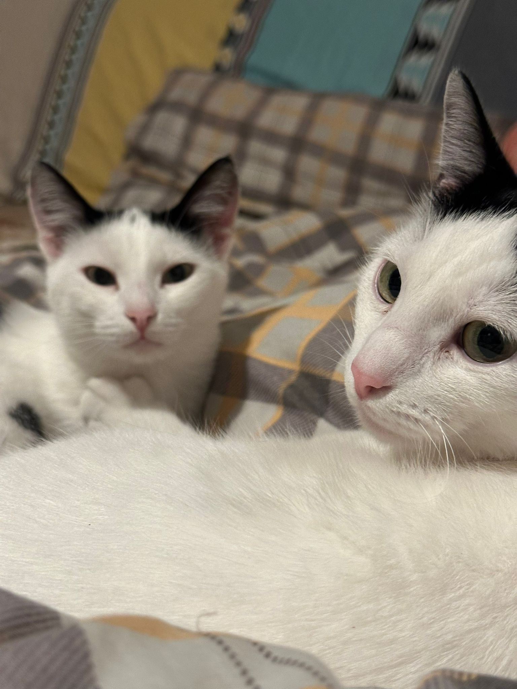
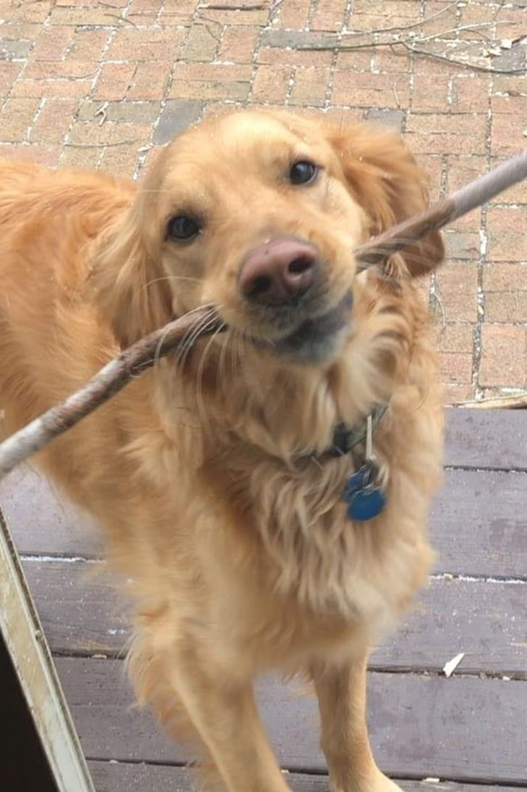
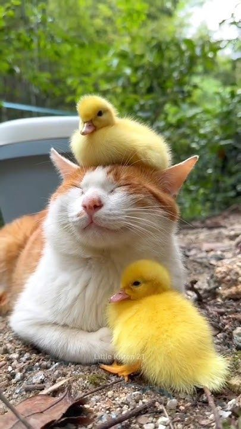

Acasa
Viaţa unui animal e împărţită între a iubi şi a-i învăţa pe oameni să se iubească.
Adopta un animal astazi si salveaza o viata!
Asociatia noastra este destinata oamenilor care doresc sa salveze un suflet!
Anunturi
Targul anual va avea loc pe data de 18 20 Martie 2025, ora 9:00!
Alege animalul pe care doresti sa-l adopti!
Pisici
Catei
Alte animale
Doneaza acum orice suma doresti!
Atentie! Donatorul trebuie sa aiba peste 18 ani!
Cum donez
Pentru a dona tot ce trebuie sa faci este sa fii conectat pe contul personal sau sa iti crezi unul, apoi vei fii redirectionat catre o pagina unde iti poti alege suma dorita!
Totodata, poti dona si alimente/jucarii/produse de ingrijire! Tot ce trebuie sa faci este ne contactez pe mail cu cateva detalii despre produsele pe care vrei sa le donezi si localitatea din care faci parte. Dupa ce ai transmis mailul vei fi contact in termen de maxim o saptamana de catre staff-ul nostru!
Voluntariar
Vrei sa dai o mana de ajutor la un unul din centrele noastre?
Alătură-te azi zecilor de voluntari care salvează și îngrijesc animale zilnic. Cine știe, poate vei oferi chiar tu o casă unui mic suflet!
Cum devin voluntar?
Pentru a deveni voluntar trebuie mai intai sa-ti faci cont pe platforma noastra. Urmeaza ca mai apoi sa primesti un email cu mai multe detalii.
Ce face un voluntar?
Dupa ce parcurgi toate etapele inscrierii, esti good to go! Vei ajuta staff-ul si voluntarii centrelor la ingrijirea animalelor care intra in centru.
Informatii despre animale!
- Carne de pui (fără oase)
- Carne de vită
- Pește
- Branza
O alimentatie sanatoasa!
Asigura-te ca micul tau animalut are o dieta echilibrata!
Alimentatie pisici:

Este o sursă excelentă de proteine pentru pisici.

Este o sursă excelentă de proteine pentru pisici.

Bogat în acizi grași Omega-3, care sunt buni pentru piele și blană.

Oferă proteine și calciu, dar este important să o dai cu moderație.
Factori de risc
Boli care pot aparea deobicei
Contact
Pentru informatii aditionale, gasiti mai jos diferite metode de a ne contacta:
Sună la +40 712 345 678 Trimite un email la ioana-anamaria.stoichita@s.unibuc.ro